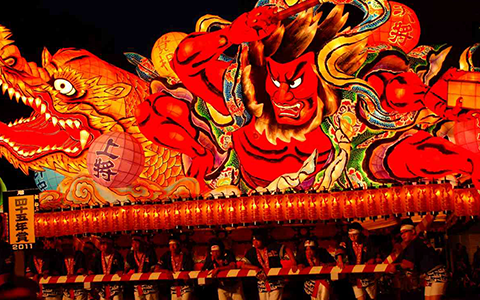
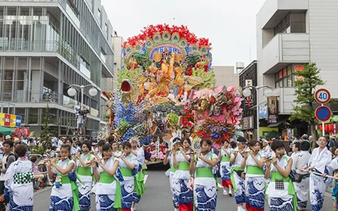

青森の他の文化体験
青森ねぶた祭
七夕様の灯籠流しが変形して伝わったものだと言われている。 七夕まつりは七月七日の夜にけがれを川や海に流す禊の行事だが、 ねぶた祭も同様に七日目には、ねぶた人形を川や海に流す習わしがある。 七夕まつりの行事が全国各地でいろいろと型を変え、その土地独自の祭となり、 それらの中でも日本海側にはねぶた祭に似た祭が多く共通点もあり、 昔京の都の文化は日本海を伝わって津軽へ運ばれたと言われている。
八戸三社大祭
およそ２９０年の歴史と伝統を誇る八戸地方最大のお祭りで、 国の重要無形民俗文化財に指定されている。華やかな山車絵巻が繰り広げられる。 ８月１日と３日の両日、おがみ神社・新羅神社・神明宮の三神社の神輿行列と、 神話・伝説・歌舞伎等を題材に、各山車組が制作した２７台もの山車の合同運行。 豪華絢爛で、大きな山車が沿道を通る度に、沿道は見物客の歓声に包まれる。 また、７月３１日の前夜祭、８月４日の後夜祭は、山車がライトアップされ日中とは また違った雰囲気を楽しむことができる。